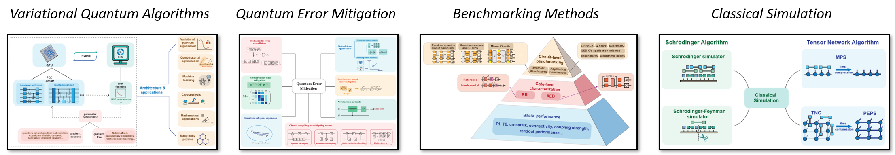
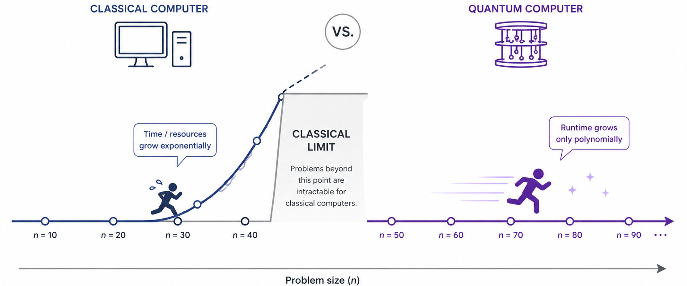
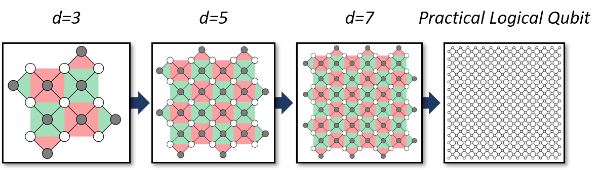
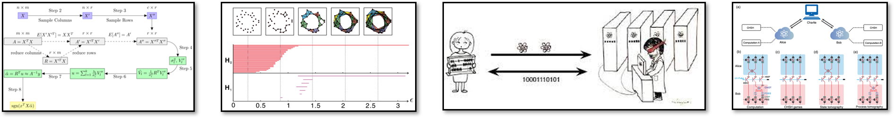
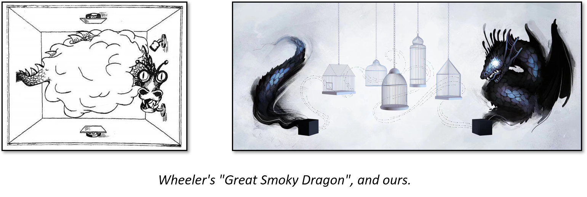

Near-Term Quantum Techniques

See our review | Variational quantum algorithms: Quantum GAN, QCNN | Quantum error mitigation: Compression readout, CNR VD | Classical simulation: Tensor network states algorithm, ACM Gordon Bell Prize: Closing the "quantum supremacy" gap
The Physical Implementation of Quantum Computing Architectures

See our review: Superconducting quantum computing, Linear optical quantum computing | Quantum computational advantage on Zuchongzhi processor: 56-qubit 20-cycle, 60-qubit 24-cycle | Quantum advantage in data storage | Ten-photon entanglement | 18-qubit entanglement
Quantum Error Correction

d=3 surface code | Logical qubit teleportation | Nine-qubit planar code | Magic state with fidelity beyond the distillation threshold
Quantum Algorithms/Protocols

Quantum Machine Learning: Quantum-inspired SVM, Topological Data Analysis | Secure Cloud Quantum Computing: Blind quantum computing
Quantum Foundations
